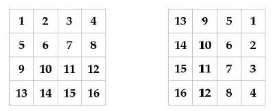

Even-odd sort. Given an array of integers, order the array so that odd entries appear on the left and even entries appear on the right. Don't use additional memory to order the array |
private int[] sort(int[] array, int lo, int hi) { int i = lo - 1; for (int k = lo; k <= hi; k++) { // cosi' mi trovo gli array divisi pari e dispari nella stessa sequenza if (isOdd(array[k])) { swap(array, ++i, k); } } array = quickSort(array, 0, i); array = quickSort(array, i + 1, hi); return array; } |
Dutch national problem. Write a program that takes an array A and an index i into A, and rearranges the element such that all elements less then A[i] (the "pivot") appear first, followed by elements equal to the pivot, followed by elements greater than the pivot. |
This problem is solved by the 3-way quicksort for which we use 2 pivots (less and more): private Comparable[] sort(Comparable[] array, int lo, int hi) { if (hi < lo) return array; int less = lo, more = hi; Comparable pivot = array[lo]; int i = lo; while (i <= more) { int compare = array[i].compareTo(pivot); if (compare < 0) swap(less++, i++); else if (compare > 0) swap(i, more--); else i++; } array = sort(array, lo, less - 1); array = sort(array, more + 1, hi); return array; } |
Delete duplicates from a sorted array. Write a program which takes as input a sorted array and updates it so that all duplicates have been removed and the remaining elements have been shifted left to fill the emptied indices. Return the number of valid elements. |
La soluzione consiste nel tenere un pivot (un puntatore) che si distanzia dall'indice del for e rappresenta il numero di entries uguale. La chiave sta nel fatto che essenso l'array ordinato noi dobbiamo tenere in considerazione solo i numeri successivi a quello preso in esame. public int[] deleteRepeated(int[] array) { int pivot = 0; for (int i = 1; i < array.length; i++) { if (array[i] != array[pivot]) { array[++pivot] = array[i]; } } for (int i = pivot + 1; i < array.length; i++) { array[i] = 0; } return array; } |
Buy and sell stocks once. Write a program that takes an array denoting the daily stock price and returns the maximum profit that could be made by buying and then selling one share of that stock. |
The maximum profit that can be made by selling on each specific day is the difference of the current price and the minimum seen so far. public static double computeMaxProfit(List < Double > prices) { double minPrice = Double.MAX_VALUE, maxProfit = ®.®; for (Double price: prices) { maxProfit = Math.max(maxProfit, price - minPrice); minPrice = Math.min(minPrice, price); } return maxProfit; } |
Buy and sell stocks twice. Write a program that computes the maximum profit that can be made by buying and selling a share at most twice. The second buy must be made on another date after the first sale |
Using the algorithm for the single version would take O(n^2) time complexity. The inefficiency in the above approaches comes from not taking advantage of previous computations. // secondo me l'idea giusta e' quella di avere uno stack (o una priority queue) col quale mantenere le due differenze piu' alte possibili (e le cose escono molto piu' semplici di come descritto nel libro) |
Enumerates all primes to N. Write a program that takes an integer argument and returns all the primes between 1 and that integer. |
The solution is the sieve of Eratosthenes that can be expressed in pseudocode as follows: algorithm Sieve of Eratosthenes is input: an integer n > 1. output: all prime numbers from 2 through n. initially all set to true. for i = 2, 3, 4, ..., not exceeding √n do if A[i] is true for j = i2, i2+i, i2+2i, i2+3i, ..., not exceeding n do A[j] := false return all i such that A[i] is true. It includes a common optimization, which is to start enumerating the multiples of each prime i from i^2. The time complexity of this algorithm is O(nloglogn) provided the array update is an O(1) operation. |
Permutes the elements of an array. (NB: le permutazioni senza ripetizioni sono i fattoriali) A permutation can be specified by an array P, where P[i] represents the location of the element at i in the permutation. Given an array A of n elements and a permutation P, apply P to A. |
The key of the solution consist in considering that every permutation can be represented by a collection of independent permutations, each of which is cyclic, that is, it moves all elements by a fixed offset, wrapping around. One way to perform this without explicitly using additional O(n) storage is to use the sign bit in the entries in the permutation-array. Specifically, we subtract n from P[i] after applying it. This means that if an entry in P[i] is negative, we have performed the corresponding move. // sinceramente questo mi sembra stia facendo cose un po' troppo strane per risolvere sto problema. Semplicemente qua mi sta dando gli indici con cui swappare i valori. Dovrei provare a fare questo da solo // da inserire il courier qui |
Select random values from array. Implement an algorithm that takes as input an array of distinct elements and a size, and returns a subset of the given size of the array elements. All subsets should be equally likely. Return the result in input array itself. |
A naive approach is ot iterate through the input array, selecting entries with probability k/n. Although the average number of selected entries is k, we may select more or less than k entries in this way. Another approach is to enumerate all the subsets of size k but this is very huge in terms of complexity. The key to efficiently building a random subset of size exactly k is to first build one of size k-1 and then adding one more element, selected randomly from the rest. The problem is trivial when k = 1. We make one call to the random number generator, take the returned value mod n (call it r), and swap A[0] with A[r]. A formal proof uses mathematical induction. Simply put first we take a random number between 0 : N-1, then 1 : N-1 and so on public static void randomsampling(int k, List<Integer> A) { Random gen = new Random() for (int i = 0; i < k; ++i) { // Generate a random int in [i, A.size() - 1]. Collections.swap(A, i, i + gen.nextlnt(A.size() - i)); } } |
Compute the next permutation. Write a program that takes as input a permutation and returns the next permutation under dictionary ordering. If the permutation is the last permutation return the empty array. For example if the input is {1,0,3,2} your function should return {1,2,0,3} |
Compute all the permutation is a nontrivial problem. THe key insight is that we want to increase the permutation by as little as possible public static List < Integer > nextPermutation(List < Integer > perm) { int k = perm.sizeO - 2; while (k >= ® && perm.get(k) >= perm.get(k + 1)) { --k; } if (k == -1) { return Collections.emptyList(); // perm is the last permutation. } // Swap the smallest entry after index k that is greater than perm[k] . We // exploit the fact that perm .subList (k + 1, perm.sizeO) is decreasing so // if we search in reverse order, the first entry that is greater than // perm[k ] is the smallest such entry. for (int i = perm.sizeO - 1; i > k; --i) { if (perm.get(i) > perm.get(k)) { Collections.swap(perm, k, i); break; } } // Since perm . subList[k + 1, perm.size()) is in decreasing order, we can // build the smallest dictionary ordering of this subarray by reversing it. Collections.reverse(perm.subList(k + 1, perm.size())); return perm; } |
Generate nonuniform random numbers. You are given n numbers as well as probabilities p0..pn-1 which sum up to 1. Given a random number generator that produces values in [0,1] uniformly, how would you generate one of the n numbers according to the specified probabilities? |
// anche questo secondo me lo fa troppo difficile. In realta' basterebbe generare uniformemente un valore compreso tra 0-1 e fare il check su dove cade all'interno delle probabilita' (semplicemente diamo piu' spazio ai valori che danno maggiore probabilita' di uscire all'interno della funzione random). In questo modo non devo usare nessun array e la funzione mi prende tempo costante in tempo e memoria (bastano una serie di if). Da rivedere insieme al libro questo. |
Sudoku. Check whether a 9x9 2D array representing a partially completed sudoku is valid. Specifically, check that no row, column or 3x3 2D subarray contains duplicates. A 0-value in the 2D array indicates that entry is blank, every other entry is in [1,9] |
There is no real scope for algorithm optimization in this problem - it's all about writing clean code. It is convenient tu use bit arrays to test for constraint violations, that is to ensure no number in [1,9] appears more than once. // da vedere |
Compute the spiral ordering of a 2D array. Write a program which takes a nxn 2d array and returns the spiral ordering of the array. |
// Questo lo voglio provare prima di scrivere di copiare il codice // CODICE QUI |
Rotate a 2D array. The image below represents the rotation operation on a 2D array representing a bit-map of an image. Specifically, the image is rotated by 90 degrees clockwise. Write a function that takes as unput an NxN 2D array and rotates the array by 90 degrees clockwise  |
// Anche questo lo voglio provare da solo |
Compute rows in a Pascal's triangle. Write a program which takes as input a nonnegative integer n and returns the first n rows of Pascal's triangle.  |
// TODO |
Palindromic string. Write a program that checks if a string is palindromic |
public static boolean isPalindromic(String s) { for (int i = ®, j = s.length() - 1; i < j; ++i, --j) { if (s.charAt(i) != s.charAt(j)) { return false; } } return true; } |
Interconvert strings and integers. In this problem, you have to implement methods that take a string representing an integer and return the corresponding integer and viceversa. |
public static String intToString(int x) { boolean isNegative = false; if (x < 8) { isNegative = true; } StringBuilder s = new StringBuilder(); do { s.append((char)('0' + Math.abs(x % 10))); x /= 10; ) while (x != 0); if (isNegative) { s.append('-'); // Adds the negative sign back . } s.reverse(); return s.toString(); } public static int stringToInt(String s) { int result = 8; for (int i = s.charAt(S) == '-' ? 1 : 0; i < s.length(); ++i) { final int digit = s.charAt(i) - ’0’; result = result * 10 + digit; } return s.charAt(S) == '-' ? -result : result; } |
Base conversion. Write a program that performs base conversion. The input is a string, an integer b1 and another integer b2. The string represents an integer in base b1. The output should be the string representing the integer in base b2. |
We can convert a a string in base b1 to integer tpe using a sequenc of multiply and adds. Then we convert that integer type to a string in base b2 using a sequence of modulus and division operations. public static String convertBase(String numAsString, int bl, int b2) { boolean isNegative = numAsString.startsWith("-"); int numAsInt = 0; for (int i = (isNegative ? 1 : 0); i < numAsString.length(); ++i) { numAsInt *= bl; numAsInt += Character.isDigit(numAsString.charAt(i)) ? numAsString.charAt(i) - '0' : numAsString.charAt(i) - 'A' + 10; } return (isNegative ? : "") + (numAsInt == 0 ? "0" : constructFromBase(numAsInt, b2)); } private static String constructFromBase(int numAsInt, int base) { return numAsInt == 0 ? "" : constructFromBase(numAsInt / base, base) + (char)(numAsInt % base <= 10 ? 'A' + numAsInt % base - 10 : '0' + numAsInt % base); } |
Replace and remove. Write a program which takes as input an array of chars and removes each 'b' and replaces each 'a' by two 'd's. Specifically along with the array you are provided an integer-valued size. Size denotes the number of entries of the array that the operation is to be applied to. You do not have to worry preserving about subsequent entries. |
The problem is trivial to solve in O(n) time if we write result to a new array. However this entails O(n) additional space. If there are no 'a' we can implement the function without allocating additional space with oen forward iteration by skipping 'b's and copying over other characters. If there are no 'b's we can implement the function without additional space as follows. First we compute the final lenght of the resulting string, which is the length of the array plus the number of 'a's. We can then write the result char by char, starting from the last char working our way backwards. We can combine these two approaches to get a complete algorithm. public static int replaceAndRemove(int size, char[] s) { // Forward iteration: remove "b"s and count the number of "a"s. int writeldx = 0, aCount = 0; for (int i = 0; i < size; ++i) { if (s[i] != ’b’) { s[writeldx++] = s[i]; } if (s[i] == ’a’) { ++aCount; } } // Backward iteration: replace "a"s with "dd"s starting from the end. int curldx = writeldx - 1; writeldx = writeldx + aCount - 1; final int finalSize = writeldx + 1; while (curldx >= 0) { if (s[curldx] == 'a') { s[writeldx - -] = 'd'; s[writeldx - -] = 'd'; } else { s[writeldx - -] = s[curldx]; } --curldx; } return finalSize; } Complexity is O(n) without additional space. |
Compute the spreadSheet column encoding. Spreadsheet often use an alphabetical encoding of the successive columns. Specifically columns are identified by A, B, C, ... X, Y, Z, AA, AB ... ZZ, etc. Implement a function that converts a spreadsheet column id to the corresponding integer, with "A" corresponding to 1. For example return 4 for D, 27 for AA, etc. How would you test your code? |
This problem is basically the problem of converting a string representing a base-26 number to the corresponding integer, except that A corresponds to 1 not 0. For example to convert ZZ we initialize result to 0. We add 26, multiply by 26, then add 26 again, i.e. the id is 26^2 + 26. Good test case are around boundaries e.g. A, B, Y, Z, AA, AB, ZY, ZZ, and some random string public static int ssDecodeColID(final String col) { int result = 8; for (int i = 8; i < col.length(); i++) { char c = col.charAt(i); result = result * 26 + c - ’A’ + 1; } return result; } A variant would be to solve the problem the opposite way, converting integer into strings for a spreadsheet |
Compute all mnemonics for a phone number. Each digit, apart from 0 and 1, in a phone keypad corresponds to one of three or four letters of the alphabet. Since words are easier to remember than numbers, it is natural to ask if a 7 or 10-digit phone number can be represented by a word. Write a program which takes as input a phone number, specified as a string of digits, and returns all possible character sequences that correspond to the phone number. The characted sequences do not have to be legal words or phrase (hint: use recursion)  |
As a general rule, any such enumeration is best computed using recursion. The execution path is very similar to that of the brute-force approach, but the compiler handles the looping. public static List < String > phoneMnemonic(String phoneNumber) { char[] partialMnemonic = new char[phoneNumber.length()]; List < String > mnemonics = new ArrayList < > (); phoneMnemonicHelper(phoneNumber, 0, partialMnemonic, mnemonics); return mnemonics; } // The mapping from digit to corresponding characters. private static final String[] MAPPING = { "0", "1", "ABC", "DEF", "GHI", "JKL", "MNO", "PQRS", "TUV", "WXYZ"}; private static void phoneMnemonicHelper(String phoneNumber, int digit, char[] partialMnemonic, List < String > mnemonics) { if (digit == phoneNumber.length()) { // All digits are processed , so add partialMnemonic to mnemonics. // (We add a copy since subsequent calls modify partialMnemonic.) mnemonics.add(new String(partialMnemonic)); } else { // Try all possible characters for this digit. for (int i = 0; i < MAPPING[phoneNumber.charAt(digit) - '0'].length(); ++i) { char c = MAPPING[phoneNumber.charAt(digit) - '0'].charAt(i); partialMnemonic[digit] = c; phoneMnemonicHelper(phoneNumber, digit + 1, partialMnemonic, mnemonics); } } } |
Look and say problem. The look and say sequence start with 1. Subsequent numbers are derived by describind the previous number in terms of consecutive digits. Specifically, to generate an entry of the sequence from the previous entry, read off the digits of the previous entry, counting the number of digits in groups of the same digit. For example 1; one 1; two 1s; one 2 then one 1; one 1, then one 2, then two 1s; three 1s, then two 2s then one 1. The first eight numbers in the look and say sequence are: <1,11,21,1211,111221,312211,13112221,1113213211> Write a program that takes as input an integer n and returns the nth integer in the look-and-say sequence. |
We compute the nth number by iteratively applying this rule n-1 times. Since we are counting digits, it is natural to use strings to represent the integers in the sequence. Specifically, going from the ith number to the (i+1)th number entails scanning the digits from most significant to least significant, counting the numbers of consecutive equal digits and writing these counts. public static String lookAndSay(int n) { String s = "1"; for (int i = 1; i < n; ++i) { s = nextNumber(s); } return s; } private static String nextNumber(String s) { StringBuilder result = new StringBuilder(); for (int i = Q; i < s.length(); ++i) { int count = 1; while (i + 1 < s.lengthO < && s.charAt(i) == s.charAt(i + 1)) { ++i; ++count; } result.append(count); result.append(s.charAt(i)); } return result.toString(); } |
Convert from Roman to Decimal. The Roman numeral representation of positive integers uses the symbols I, V, X, L, C, D, M representing 1, 5, 10, 50, 100, 500, 1000. In this problem we give simplified rules for representing numbers in this system. Specifically, define a string over the Roman number symbols to be a valid Roman number string if symbols appear in nonincreasing order with the following exception allowed:
Write a program which takes as input a valid roman number string s and returns the integer it corresponds to. |
public Static int romanToInteger(String s) { Map < Character, Integer > T = new HashMap < Character, Integer > () { { put(’I’, 1); put(’V’, 5); put(’X\ 18); put(’L’, 58); put(’C’, 188); put(’D’, 588); put(’M’, 1888); } }; int sum = T.get(s.charAt(s.length() - 1)); for (int i = s.length() - 2; i >= 0; --i) { if (T.get(s.charAt(i)) < T.get(s.charAt(i + 1))) { sum -= T.get(s.charAt(i)); } else { sum += T.get(s.charAt(i)); } } return sum; } |
Compute all valid IP addresses. Write a program that determines where to add periods to a decimal string so that the resulting string is a valid IP address. There may be more than one valid IP address corresponing to a string, in which case you should print all possibilities. |
There are 3 periods in a valid IP address, so we can enumerate all possible placements of these periods and check whether all four corresponding substrings are between 0 and 255. For example, if the string is "192116811", we could put the first period after "1", "19" and "192". If the first part is "1" the second part could be "9", "92" and "921". Of these "921" is illegal so we do not continue with it. public static List < String > getValidIpAddress(String s) { List < String > result = ne« ArrayListoO; for (int i = l; i < 4 && i < s.lengthO; ++i) { final String first = s.substring(0, i); if (isValidPart(first)) { for (int j = 1; i + j < s.length() && j < 4; ++j) { final String second = s.substring(i, i + j); if (isVal idPart(second)) { for (int k = 1; i + j + k < s.length() && k < 4; ++k) { final String third = s.substring(i + j, i + j + k); final String fourth = s.substring(i + j + k); if (isVal idPart(third) && i sVal idPart(fourth)) { result.add(first + +second + +third + +fourth); } } } } } } return result; private static boolean isValidPart(String s) { if (s.lengthO > 3) { return false; } // ”00" , ”000", "01", etc. are not valid, but "0" is valid. if (s.startsWith("0") && s.length() > 1) { return false; } int val = Integer.parselnt(s); return val <= 255 && val >= 0; } |
Write a string sinusoidally. Define the snakestring of s to be the left-right top-to-bottom sequence in which characters appear when is is written ina sinusoidal fashon. For example, the snakestring string for Hello_world is e_lHloWrdlo. Write a program which takes as input a string s and returns the snakestring of s. |
We observe that the result begins with the characters s[1], s[5], s[9] followed by s[0], s[2], s[4], etc. Therefore we can create the snakestring directly with three iterations through s. public static String snakeString(String s) { Str ingBuilder result = new StringBuilder(); // Outputs the first row, i.e., s[l], s[5], s[9], ... for (int i = 1; i < s.length(); i += 4) { result.append(s.charAt(i)); } // Outputs the second row, i.e., s[<9], s[2], s[4], ... for (int i = 0; i < s.length(); i += 2) { result.append(s.charAt(i)); } // Outputs the third row, i.e., s[3], s[7], s[ll], ... for (int i = 3; i < s.length(); i += 4) { result.append(s.charAt(i)); } return resul t.toString(); } |
Implement Run-Lenght encoding. Run lenght encoding compression offers a fast way to do efficient on-the-fly compression and decompression of strings. The idea is simple: encode successive repeated characters by the repetition count and te character. Implement RLE encoding and decoding functions. Assume the string to be encoded consist of letters of alphabet with no digits and the string to be decoded is a valid encoding. |
public static String decoding(String s) { int count = 0; StringBuilder result = new StringBuilder(); for (int i = 0; i < s.lengthO; i++) { char c = s.charAt(i); if (Character.isDigit(c)) { count = count * 10 + c - '0'; } else { // c is a letter of alphabet. while (count > 0) { // Appends count copies of c to result. result.append(c); count--; } } } return result.toString(); } public static String encoding(String s) { int count = 1; StringBuilder ss = new StringBuilder(); for (int i = 1; i <= s.length(); ++i) { if (i == s.length() || s.charAt(i) != s.charAt(i - 1)) { // Found new character so write the count of previous character. ss.append(count); ss.append(s.charAt(i - 1)); count = 1; } else { // s.charAt(i) == s.charAt(i - 1). ++count; } } return ss.toString(); } |
Find the first occurrence of a substring. Given two strings s, and t, find the first occurrence of s in t |
Intuitively, the brute-force algorithm is slow because it advances though t one char at time, and potentially does O(m) computation with each advance, wheere m is the length of s. There are three linear time string matching algorithms: KMP, Boyer-Moor and Rabin-Karp. Of these, Rabin-Karp is by far the simplest to understand and implement. The Rabin-Karp algorithm is very similar to the brute-force one, but it does not require the second loop. Instead is uses the concept of a "fingerprint". Specifically, let m be the length of s. It computes hash codes of each substring whose length is m-these are the fingerprints. The key of efficiency is using an incremental hash function, such as a function with the property that the hash code of a string is an additive function of each individual chars (these are somtimes called rolling hash). For such a function, getting the hash code of a sliding window of char is very fast for each shift. But since the hash may have collision we need to check if the strings are equals after checking the hash. For this algorithm to run in linear time, we need a good hash function, to reduce the likelihood of collissions, which entail potentially time consuming string equality checks. // Returns the index of the first character of the substring if found , -1 otherwise. public static int rabinKarp(String t, String s) { if (s.lengthO > t.length()) { return -1; // s is not a substring of t. } final int BASE = 26; int tHash = 0, sHash = 0; // Hash codes for the substring of t and s. int powerS = 1; // BASEAlsl. for (int i = 0; i < s.lengthO; i++) { powerS = i > 0 ? powerS * BASE : 1; tHash = tHash * BASE + t.charAt(i); sHash = sHash * BASE + s.charAt(i); } for (int i = s.lengthO; i < t.length(); i++) { // Checks the two substrings are actually equal or not, to protect // against hash collision. if (tHash == sHash && t.substring(i - s.lengthO, i).equals(s)) { return i - s.lengthO; // Found a match. } // Uses rolling hash to compute the new hash code. tHash -= t.charAt(i - s.lengthO) * powerS; tHash = tHash * BASE + t.charAt(i); } // Tries to match s and t.substring(t.length() - s.lengthO). if (tHash == sHash < & < & t.substring(t.length() - s.length()).equals(s)) { return t.length() - s.lengthO; } return -1; // s is not a substring of t. } For a good hash function, the time complexity is O(m+n), independent of the inputs s and t, where m is the length of s and n is the length of t. |
Linked List Bootcamp. Implement a basic list API firs singly linked lists. |
public static ListNode < Integer > search(ListNode < Integer > L, int key) { while (L != null < & < & L.data != key) { L = L.next; } // If key was not present in the list, L will have become null. return L; } // Insert newNode after node. public static void insertAfter(ListNode < Integer > node, ListNode < Integer > newNode) { newNode.next = node.next; node.next = newNode; } // Delete the node immediately following aNode. Assumes aNode is not a tail. public static void deleteList(ListNode < Integer > aNode) { aNode.next = aNode.next.next; } |
Merge two sorted linked lists. Write a program that takes two linked lists, assumed to be sorted, and returns their merge. The only field your program can change in a node is its next field. A variant of this problem would be to use double linked lists. |
public static ListNode < Integer > mergeTwoSortedLists(ListNode < Integer > LI, ListNode < Integer > L2) { // Creates a placeholder for the result. ListNode < Integer > dummyHead = new ListNode < > (0, null); ListNode < Integer > current = dummyHead; ListNode < Integer > pi = LI, p2 = L2; while (pi != null && p2 != null) { if (pi.data <= p2.data) { current.next = pi; pi = pi.next; } else { current.next = p2; p2 = p2.next; } current = current.next; } // Appends the remaining nodes of pi or p2. current.next = pi != null ? pi : p2; return dummyHead.next; } |
Reverse a single sublist. Write a program which takes a singly linked list L and two integers s and f as arguments, and reverse the order of the nodes from the sth node to fth node, inclusive. Do not allocate additional nodes. Variants are:
|
public static ListNode < Integer > reverseSublist(ListNode < Integer > L, int start, int finish) { if (start == finish) { // No need to reverse since start == finish. return L; } ListNode<Integer > dummyHead = new ListNode < > (0, L); ListNode<Integer > sublistHead = dummyHead; int k = 1; while (k++ < start) { sublistHead = sublistHead.next; } // Reverse sublist. ListNode<Integer > sublistlter = sublistHead.next; while (start++ < finish) { ListNode < Integer > temp = sublistlter.next; sublistlter.next = temp.next; temp.next = sublistHead.next; sublistHead.next = temp; } return dummyHead.next; } |
Test for ciclicity. Write a program that takes the head of a singly linked list and returns null if there doesn't exist a cycle, and the node at the start of the cycle if the cycle is present. You don't know the length of the list in advance. |
This problem has several solutions. If space is not an issue the simplest approach is to explore nodes via the next field starting from the head and storing visited nodes in a hash table - a cycle will exists if and only if we visit a node already in the hash table. A brute-force approach that does not use additional storage and does not modify the list is to traverse the list in two loops - the outer loop traverses the node on-by-one and the inner loop starts from the head, and traverses as manynodes as the outer loop has gone through so far. If the node being visited by the outer loop is visited twice, a loop has been detected. This approach has O(n^2) time complexity. This idea can be made to work in linear time using 2 iterators, one slow and one fast. In each iteration advance the slow iterator by one and the fast by two. The list has a cycle if and only if the two iterators meet. The reasoning is as follows: if the fast iterator jumps over the slow iterator, the slow iterator will equal the fast iterator in the next step. Now, assuming we have detected a cycle using the above method, we can find the start of the cycle by first calculating the cycle length C. Once we know there is a cycle and we have a node on it, it is trivial to compute the cycle length. To find the first node on the cycle we use two iterators, one of which is C ahead of the other. We advance them in tandem and when they meet, that node must be the first ndoe of the cycle. The code to do this traversal is quite simple: public static ListNode < Integer > hasCycle(ListNode < Integer > head) { ListNode < Integer > fast = head, slow = head; while (fast != null && fast.next != null) { slow = slow.next; fast = fast.next.next; if (slow == fast) { // There is a cycle, so now let’s calculate the cycle length. int cycleLen = 0; do { ++cycleLen; fast = fast.next; } while (slow != fast); // Finds the start of the cycle. ListNode < Integer > cycleLenAdvancedlter = head; // cycleLenAdvancedlter pointer advances cycleLen first. while (cycleLen--> 0) { cycleLenAdvancedlter = cycleLenAdvancedlter.next; } ListNode < Integer > iter = head; // Both iterators advance in tandem. while (iter != cycleLenAdvancedlter) { iter = iter.next; cycleLenAdvancedlter = cycleLenAdvancedlter.next; } return iter; // iter is the start of cycle. } return null; // no cycle. } } |
Test for overlapping lists without cycles. Write a program that takes two cycle-free singly linked lists and determines if there exists a node that is common to both lists. |
The lists overlap if and only if both have the same tail node: once the lists converge at a node, they cannot diverge at a later node. Therefore checking for overlap amounts to finding the tail nodes for each list. To find the first ovelapping node, we compute the length of each list. The first overlapping node is determined by advancing through the longer list by the difference in lengths and then advancing through both lists in tandem, stopping at the first common node. If we reach the end of a list without finding a common node, the lists do not overlap. public static ListNode < Integer > overlappingNoCycleLists( ListNode < Integer > L1, ListNode < Integer > L2) { int L1Length = length(Ll), L2Length = length(L2); // Advances the longer list to get equal length lists. if (L1Length > L2Length) { LI = advanceListByK(L1Length - L2Length, LI); } else { L2 = advanceListByK(L2Length - L1Length, L2); } while (L1 != null & < & L2 != null & < & LI != L2) { L1 = L1.next; L2 = L2.next; } return L1; // nullptr implies there is no overlap between LI and L2. } public static ListNode < Integer > advanceListByK(int k, ListNode < Integer > L) { while (k--> 0) { L = L.next; } return L; } private static int length(ListNode < Integer > L) { int len = 0; while (L != null) { ++len; L = L.next; } return len; } The time complexity is O(n) and the space complexity is O(1) |
Test for overlapping lists that may have cycles. Check if two lists may overlap but considering that the lists may have cycles. |
This problem is easy to solve using O(n) time and space complexity, where n is the total number of nodes, using the hash table approach. We can improve space complexity by studying different cases. The easiest case is when neithr list is cyclic and we can determine the solution as mentioned for the single case. If one list is cyclic and the other is not, they cannot overlap so we are done. This leaves us with the case that both lists are cyclic. In this case, if they overlap, the cycles must be identical. There are two subcases: the paths to the cycle merge before the cycle, in whch case there is a unique first node that is common, or the paths reach the cycle at different nodes on the cycle. public static ListNode <Integer> overlappingLists(ListNode <Integer> L1, ListNode <Integer> L2) { // Store the start of cycle if any. ListNode <Integer> rootl = CheckingCycle.hasCycle(L1); ListNode <Integer> root2 = CheckingCycle.hasCycle(L2); if (rootl == null && root2 == null) { // Both lists don’t have cycles. return overlappingNoCycleLists(L1, L2); } else if ((rootl != null && root2 == null) || (rootl == null < && root2 != null)) { // One list has cycle, and one list has no cycle. return null; } // Both lists have cycles. ListNodednteger > temp = root2; do { temp = temp.next; } while (temp != rootl && temp != root2); // L1 and L2 do not end in the same cycle. if (temp != rootl) { return null; // Cycles are disjoint. } // L1 and L2 end in the same cycle, locate the overlapping node if they // first overlap before cycle starts. int stemlLength = distance(Ll, rootl), stem2Length = distance(L2, root2); int count = Math.abs(stemlLength - stem2Length); if (stemlLength > stem2Length) { L1 = advanceListByK(stemlLength - stem2Length, L1); } else { L2 = advanceListByK(stem2Length - stemlLength, L2); } while (L1 != L2 & < & L1 != rootl && L2 != root2) { L1 = L1.next; L2 = L2.next; } // If L1 == L2 before reaching rootl, it means the overlap first occurs // before the cycle starts; otherwise , the first overlapping node is not // unique, so we can return any node on the cycle. return L1 == L2 ? L1 : rootl; } // Calculates the distance between a and b. private static int distance(ListNode <Integer> a, ListNode <Integer> b) { int dis = 0; while (a != b) { a = a.next; ++dis; } return dis; } |
Delete a node from a singly linked list. Write a program which deletes a node in a singly linked list. The input node is guaranteed not to be the tail node. |
Given the pointer to a node, it is impossible to delete it from the list without modifying its predecessor,2 next pointer and the only way to get to the predecessor is to traverse the list from head, which requires O(n) time. Given a node, it is easy to delete its successor, since just requires updating the next pointer of the current node. If we copy the value part of the next node t the current node and then delete the next node, we have effectively deleted the current node. Time complexity is O(1) // Assumes nodeToDelete is not tail. public static void deletionFromList(ListNode < Integer > nodeToDelete) { nodeToDelete.data = nodeToDelete.next.data; nodeToDelete.next = nodeToDelete.next.next; } |
Remove the Kth last element from a linked list. Given a singly linked list and an integer k. write a program to remove the kth last element from the list. In particular, you can assume that it is possible to record the length of the list. |
Brute-force approach is to compute the length with one pass, and then use that to determine which node to delete in a second pass. A drawback of this approach is taht it entails two passes over the data, which is slow. We use two iterators to traverse the list. The first iterator is advanced by k steps, and then the two iterators advance in tandem. When the first iterator reaches the tail, the second iterator is at the (k+i) last node, and we can remove the kth node. // Assumes L has at least k nodes, deletes the k-th last node in L. public static ListNode < Integer > removeKthLast(ListNode < Integer > L, int k) { ListNode < Integer > dummyHead = new ListNodeo(0, L); ListNode < Integer > first = dummyHead.next; while (k--> 0) { first = first.next; } ListNode < Integer > second = dummyHead; while (first != null) { second = second.next; first = first.next; } // second points to the (k + l)-th last node, deletes its successor. second.next = second.next.next; return dummyHead.next; } Compared to the brute force approach, if k is small enough that we can keep the set of nodes between the two iterators in memory, but the list is too big to fit in memory, the twoiterator approach halves the number of disc accesses. |
Remove duplicates from a sorted list. Write a program that takes as input a singly linked list of integers in sorted order, and remove duplicates from it. The list should be sorted. A variant would be: let m be a positive integer and L a sorted singly inked list of integers. For each integer k, if k appears more than m tiems in L, remove all nodes from L containing k. |
The best approach is the one seen for the int arrays. As we traverse the list, we remove all successive nodes with the same value as the current node. public static ListNode < Integer > removeDuplicates(ListNode < Integer > L) { ListNode < Integer > iter = L; while (iter != null) { // Uses nextDistinct to find the next distinct value. ListNode < Integer > nextDistinct = iter.next; while (nextDistinct != null < && nextDistinct.data == iter.data) { nextDistinct = nextDistinct.next; } iter.next = nextDistinct; iter = nextDistinct; > return L; } } |
Implement cyclic right shift for singly linked lists. Write a program that takes as input a singly linked list and a nonegative integer k, and returns the list cyclically shifted to the right by k. |
A brute-force strategy is to right shift the list by one node k times. Each right shift by a single node entails finding the tail, and its predecessor. The key to improving upon the brute-force approach is to use the fact that linked lists can be cut and the sublists reassembled very efficiently. First we find the tail node t. Sicne the successor of the tail is the original head, we update t's successor. The original head is to become the kth node from the start of the new list.Therefore, the new head is the (n-k)th node in the initial list. public static ListNode < Integer > cyclicallyRightShiftList(ListNodednteger > L, int k) { if (L == null) { return L; } // Computes the length of L and the tail. ListNode < Integer > tail = L; int n = 1; while (tail.next != null) { ++n; tail = tail.next; } k % -n; if (k == 0) { return L; } tail.next = L; // Makes a cycle by connecting the tail to the head. int stepsToNewHead = n - k; ListNode < Integer > newTail = tail; while (stepsToNewHead--> 0) { newTail = newTail.next; } ListNode < Integer > newHead = newTail.next; newTail.next = null; return newHead; } Time complexity is O(n) while memory complexity is O(1) |
Even-odd merge. Consider a singly linked list whose nodes are numbered starting at 0. Define the even-odd merge of the list to be the list consisting of the even-numbered nodes followed by the odd-numbered nodes. |
The key is to avoid extra space by reusing the existing list nodes. We do this by iterating through the list and appending even elements to one list and odd elements to another list. Finally we append the odd list to the even list. public static ListNode < Integer > evenOddMerge(ListNode < Integer > L) { if (L == null) { return L; } ListNode < Integer > evenDummyHead = new Li stNode < > (0, null), oddDummyHead = new ListNode < > (0, null); List < ListNode < Integer» tails = Arrays.asList(evenDummyHead, oddDummyHead); int turn = 0; for (ListNode < Integer > iter = L; iter != null; iter = iter.next) { tails.get(turn).next = iter; tails.set(turn, tails.get(turn).next); turn A = 1; } tails.get(1).next = null; tails.get(0).next = oddDummyHead.next; return evenDummyHead.next; } |
Test whether a single linked list is palindromic. Write a program that tests whether a singly linked list is palindromic. |
public static boolean isLinkedListAPalindrome(ListNode <Integer> L) { if (L == null) { return true; } // Finds the second half of L. ListNode < Integer > slow = L, fast = L; while (fast != null < && fast.next != null) { fast = fast.next.next; slow = slow.next; } // Compare the first half and the reversed second half lists. ListNode < Integer > firstHalflter = L; ListNode < Integer > secondHalfIter = ReverseLinkedListlterative.reverseLinkedList(slow); while (secondHalfIter != null < && firstHalflter != null) { if (secondHalflter.data != firstHalflter.data) { return false; } secondHalflter = secondHalfIter.next; firstHalflter = firstHalflter.next; } return true; } |
Implement list pivoting. Implement a function which takes as input a singly linked list and an integer k and performs a pivot of the list with respect to k. The relative ordering of nodes that appear before k, and after k, must remeain unchanges. |
A key observation is that we do not really need to create new nodes for the three lists. Instead we reorganize the original list nodes into these three lists in a single traversal of the original list. Since the traversal is in order, the individual lists preserve the ordering. We combine these three lists in the final step public static ListNode <Integer> listPivoting(ListNode <Integer> L, int x) { ListNode <Integer> lessHead = new ListNode <> (0, null); ListNode <Integer> equalHead = new ListNode <> (0, null); ListNode <Integer> greaterHead = new ListNode <> (0, null); ListNode <Integer> lesslter = lessHead; ListNode <Integer> equallter = equalHead; ListNode <Integer> greaterlter = greaterHead; // Populates the three lists. ListNode <Integer> iter = L; while (iter != null) { if (iter.data < x) { lesslter.next = iter; lesslter = iter; } else if (iter.data == x) { equallter.next = iter; equallter = iter; } else { // iter.data > x. greaterlter.next = iter; greaterlter = iter; } iter = iter.next; } // Combines the three lists. greaterlter.next = null; equallter.next = greaterHead.next; lesslter.next = equalHead.next; return lessHead.next; } |
Add list-based integers. Write a program which takes two singly linked lists of digits and returns the list corresponding to the sum of the integers they represent. The least significant digit comes first. |
public static ListNode < Integer > addTwoNumbers(ListNode < Integer > L1, ListNode< Integer > L2) { ListNode< Integer > dummyHead = new L1stNode < > (0, null); ListNode< Integer > placeIter = dummyHead; int carry = 0; while (L1 != null || L2 != null) { int sum = carry; if (L1 != null) { sum += L1.data; L1 = L1.next; } if (L2 != null) { sum += L2.data; L2 = L2.next; } placeIter.next = newListNode < > (sum % 10, null); carry = sum / 10; placeIter = placeIter.next; } // carry cannot exceed 1, so we never need to add more than one node. if (carry > 0) { placeIter.next = new ListNode< > (carry, null); } return dummyHead.next; } |
Design a stack that includes a max operation, in addition to push and pop. |
private static class MaxWithCount { public Integer max; public Integer count; public MaxWithCount(Integer max, Integer count) { this.max = max; this.count = count; } } public static class Stack { private Deque < Integer > element = new LinkedList < > (); private Deque < MaxWithCount > cachedMaxWithCount = new LinkedList < > (); public boolean empty() { return element.isEmpty(); } public Integer max() { if (empty()) { throw new IllegalStateException("max(): empty stack"); } return cachedMaxWithCount.peekFirst().max; } public Integer pop() { if (empty()) { throw new IllegalStateException("pop(): empty stack"); } Integer popElement = element.removeFirst(); if (popElement.equals(cachedMaxWithCount.peekFirst().max)) { cachedMaxWithCount.peekFirst().count = cachedMaxWithCount.peekFirst().count - 1; if (cachedMaxWithCount.peekFirst().count.equals(®)) { cachedMaxWithCount.removeFirst(); } } return popElement; } public void push(Integer x) { element.addFirst(x); if (!cachedMaxWithCount.isEmpty()) { if (Integer.compare(x, cachedMaxWithCount.peekFirst().max) == ®) { cachedMaxWithCount.peekFirst().count = cachedMaxWithCount.peekFirst().count + 1; } else if (Integer.compare(x, cachedMaxWithCount.peekFirst().max) > ®) { cachedMaxWithCount.addFirst(new MaxWithCount(x, 1)); } } else { cachedMaxWithCount.addFirst(new MaxWithCount(x, 1)); } } } |
Evaluate RPN expressions. Write a program that takes an arithmetical expression in RPN and returns the number that the expression evaluates to. |
public static int eval(String RPNExpression) { Deque < Integer > intermediateResults = new LinkedList <> (); String delimiter = String[] symbols = RPNExpression.split(delimiter); for (String token: symbols) { if (token.length() == 1 && "+-/*".contains(token)){ final int y = intermediateResults.removeFirst(); final int x = intermediateResults.removeFirst(); switch (token.charAt(0)) { case '+': intermediateResults.addFirst(x + y); break; case '-': intermediateResults.addFirst(x - y); break; case '*': intermediateResults.addFirst(x * y); break; case '/': intermediateResults.addFirst(x / y); break; default: throw new IllegalArgumentException("Malformed RPN at :" + token); } } else { // token is a number. intermediateResults.addFirst(Integer.parselnt(token)); } } return intermediateResults.removeFirst(); } |
Test a string over [], (), {} for well-formedness. Write a program that tests if a string made up of the chars (, ), [, ], {, } is well-formed |
public static boolean isWellFormed(String s) { Deque < Character > leftChars = new LinkedList < > (); for (int i = 0; i < s.length(); ++i) { if (s.charAt(i) == '(' || s.charAt(i) == '{' || s.charAt(i) == '[') { leftChars.addFirst(s.charAt(i)); } else { if (leftChars.isEmpty()) { return false; // Unmatched right char. } if ((s.charAt(i) == ')' && leftChars.peekFirst() != '(') || (s.charAt(i) == && leftChars.peekFirst() != '{') || (s.charAt(i) == ']' < & < & leftChars.peekFirst() != '[')) { return false; // Mismatched chars. } leftChars.removeFirst(); } } return leftChars.isEmpty(); } |
Normalized pathnames. Write a program which takes a path name and returns the shortest equivalent pathname. Assume individual directories and files have names that use only alphanumeric chars. Subdirectory names may be combined using forward slashes (/), the current directory (.) and parent directory (..) |
public static String shortestEquivalentPath(String path) { if (path.equals("")) { throw new IllegalArgumentException("Empty string is not a legal path."); } Deque < String > pathNames = new LinkedList < > (); // Special case: starts with which is an absolute path. if (path.startsWith("/")) { pathNames.addFirst("/"); } for (String token: path.split("/")) { if (token.equals("..")) { if (pathNames.isEmpty() || pathNames.peekFirst().equals("..")) { pathNames.addFirst(token); } else { if (pathNames.peekFirst().equals("/")) { throw new IllegalArgumentException( "Path error, trying to go up root " + path); } pathNames.removeFirst(); } } else if (!token.equals(".") && !token.isEmpty()) { // Must be a name. pathNames.addFirst(token); } StringBuilder result = new StringBuilder(); if (!pathNames.isEmpty()) { Iterator < String > it = pathNames.descendinglterator(); String prev = it.next(); result.append(prev); while (it.hasNext()) { if (!prev.equals("/")) { result.append("/"); } prev = it.next(); result.append(prev); } } return result.toString(); } |
Search a posting list. A posting list is a singly linked list with an additional "jump" field at each node. The jum field points to any other node. One way to enumerate the nodes in a posting list is to iteratively follow the next field. Another is to always first follow the jump field if it leads to a node that has not been explored previously, and then search from the next node. Call the order in which these nodes are traversed the jump-first order. Write recursive and iterative routines that take a posting list, and compute the jump-first order. Assume each node has an integer valued field that holds the order, and is initialized to -1 |
The recursive algorithm directly follows the specification. If the current node is unvisited update the current node's order, visit its jump node then visit the next node. public static void setJumpOrder(PostingListNode L) { setJumpOrderHelper(L, 0); } private static int setJumpOrderHelper(PostingListNode L, int order) { if (L != null && L.order == -1) { L.order = order++; order = setJumpOrderHelper(L.jump, order); order = setJumpOrderHelper(L.next, order); } return order; } The iterative solution uses a stack to simulate the recursive algorithm. The key insight is that for every node, we want to visit its next node after visiting its jump node. A stack works well because of its last-in, first-out semantics. Specifically, when processing a node, we push its next node on to the stack and then we push its jump node on to the stack. This way we process the jump node before the next node. public static void setJumpOrder(PostingListNode L) { Deque < PostingListNode > s = new LinkedList < > (); int order = 0; s.addFirst(L); while (!s.isEmpty()) { PostingListNode curr = s.removeFirst(); if (curr != null && curr.order == -1) { curr.order = order++; // Stack is last-in, first -out, and we want to process // the jump node first, so push next, then push jump. s.addFirst(curr.next); s.addFirst(curr.jump); } } } |
Compute buildings with a sunset view. You are given with a series of buildings that have windows facing west. The buildings are in a straight line and any building which is to the east of a building of equal or greater height cannot view the sunset. Design an algorithm that processes buildings in east-to-west order and returns the set of buildings which view the sunset. Each building is specified by its height. Variant: solve the problem when buildings are presented in west-to-east order |
private static class BuildingWithHeight { public Integer id; public Integer height; public BuildingWithHeight(Integer id, Integer height) { this.id = id; this.height = height; } public static Deque < BuildingWithHeight > examineBuildingsWithSunset( Iterator < Integer > sequence) { int buildingldx = 0; Deque < BuildingWithHeight > buildingsWithSunset = new LinkedListoO; while (sequence.hasNext()) { Integer buildingHeight = sequence.next(); while (!buildingsWithSunset.isEmpty() &&(Integer.compare(buildingHeight, buildingsWithSunset.getLast().height) >= 0)) { buildingsWithSunset.removeLast(); } buildingsWithSunset.addLast( new BuildingWithHeight(buildingldx++, buildingHeight)); } return buildingsWithSunset; } |
Compute binary tree nodes in order of increasing depth. Given a binary tree, return an array consisting of the keys at the same level. Keys should appear in the order of the corresponding nodes depths, breaking ties from left to right. |
Intuitively, since nodes are already presented ina somewhat ordered fashion in the tree, it should be possible to avoid a sort, thereby reducing time complexity. Furthermore, by processing nodes in order of depth, we do not need to lavel every node with its depth. In the following we use a queue of nodes to store nodes at depth i and a queue of nodes at depth i+1. After all nodes at depth i are processed we are done with that queue and can start processing the queue with nodes at depth i+1, putting the depth i+2 nodes in a new queu public static List < List < Integer > binaryTreeDepthOrder( BinaryTreeNode < Integer > tree) { Queue < BinaryTreeNode < Integer > currDepthNodes = new LinkedList < > (); currDepthNodes.add(tree); List < List < Integer >> result = new ArrayList < > (); while (!currDepthNodes.isEmpty()) { Queue < BinaryTreeNode < Integer > nextDepthNodes = new LinkedList < > (); Listdnteger > thisLevel = new ArrayList < > (); while (!currDepthNodes.isEmpty()) { BinaryTreeNode < Integer > curr = currDepthNodes.poll(); if (curr != null) { thisLevel.add(curr.data); // Defer the null checks to the null test above. nextDepthNodes.add(curr.left); nextDepthNodes.add(curr.right); } } if (!thisLevel.isEmpty()) { result.add(thisLevel); } currDepthNodes = nextDepthNodes; } return result; } |
Implement a circualr queue. Implement a queue API using an array for storing elements. Your API should include a constructor function, which takes as argument the initial capacity of the queue, enqueue and dequeue functions, and a function which returns the number of elements stored. Implement dynamic resizing to support storing an arbitrarily large number of elements. |
public static class Queue { private int head = 0, tail = 0, numQueueElements = 0; private static final int SCALE_FACTOR = 2; private Integer[] entries; public Queue(int capacity) { entries = new Integer[capacity]; } public void enqueue(Integer x) { if (numQueueElements == entries.length) { // Need to resize. // Makes the queue elements appear consecutively. Collections.rotate(Arrays.asList(entries), -head); // Resets head and tail. head = 0; tail = numQueueElements; entries = Arrays.copyOf(entries, numQueueElements * SCALE_FACTOR); } entries[tail] = x; tail = (tail + 1) % entries.length; ++numQueueElements; public Integer dequeue() { if (numQueueElements != 0) { --numQueueElements; Integer ret = entries[head]; head = (head + 1) % entries.length; return ret; } throw new NoSuchElementException("Dequeue called on an empty queue."); } public int size() { return numQueueElements; } } |
Implement a queue using stacks. How would you implement a queue given a library implementing stacks? |
public static class Queue { private Deque < Integer > enq = new LinkedList < > (); private Deque < Integer > deq = new LinkedList < > (); public void enqueue(Integer x) { enq.addFirst(x); } public Integer dequeue() { if (deq.isEmpty()) { // Transfers the elements from enq to deq. while (!enq.isEmpty()) { deq.addFirst(enq.removeFirst()); } } if (!deq.isEmpty()) { return deq.removeFirst(); } throw new NoSuchElementException("Cannot pop empty queue"); } } |
Implement a queue with max API. Implement a queue only using stacks with the max operation that returns the maximum element currently stored in the queue. |
public static class QueueWithMax < T extends Comparable < T >> { private Queue < T > entries = new LinkedList < > (); private Deque < T > candidatesForMax = new LinkedList < > (); public void enqueue(T x) { entries.add(x); while (!candidatesForMax.isEmpty()) { // Eliminate dominated elements in candidatesForMax. if (candidatesForMax.getLast().compareTo(x) >= 0) { break; } candidatesForMax.removeLast(); } candidatesForMax.addLast(x); } public T dequeue() { if (!entries.isEmpty()) { T result = entries.remove(); if (result.equals(candidatesForMax.getFirst())) { candidatesForMax.removeFirst(); } return result; } throw new NoSuchElementException("Called dequeue on empty queue."); public T max() { if (!candidatesForMax.isEmpty()) { return candidatesForMax.getFirst(); } throw new NoSuchElementException("empty queue"); } } |